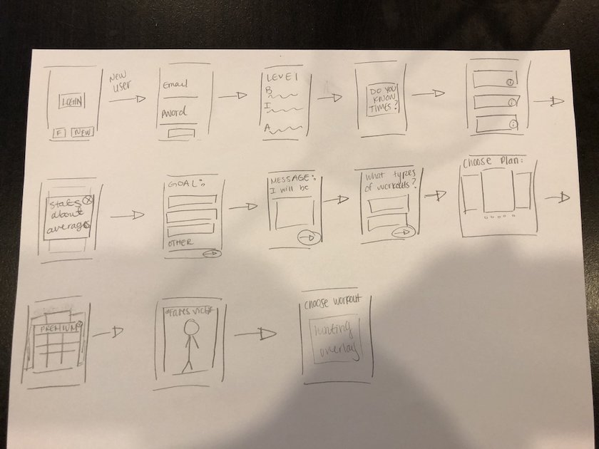
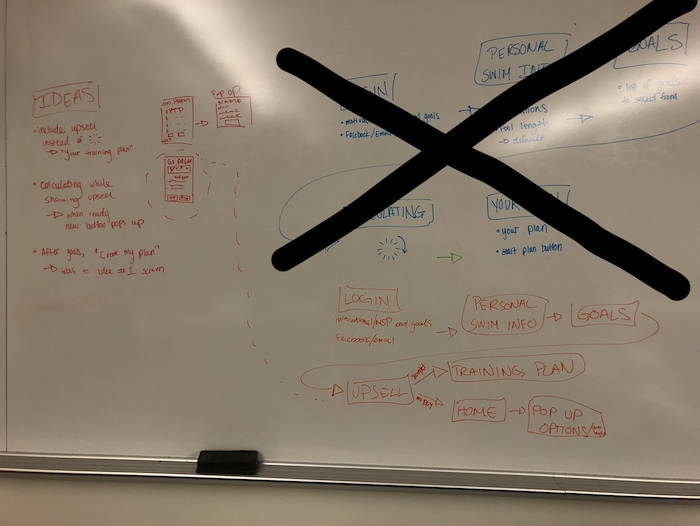
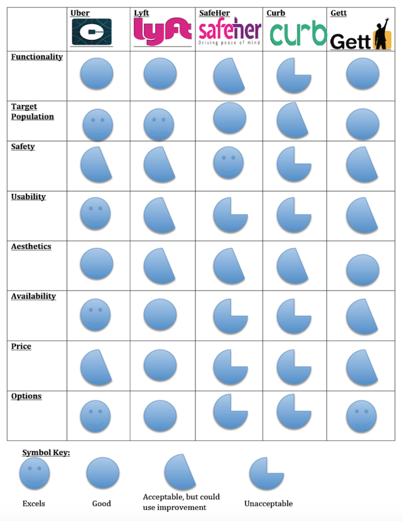
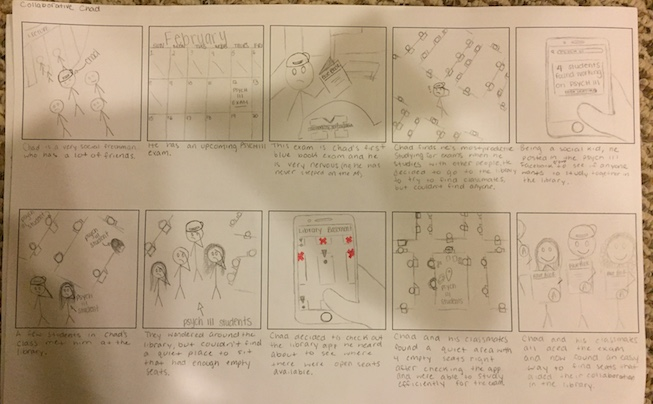

During this Winter 2018 semester at the University of Michigan, I am working with MySwimPro in redesigning the onboarding process of their application in order to increase the number of users subscribing to premium. After conducting user and competitor research we have now begun the design phase. Updates to come as I move along with the process.
Many users will sign up for a free trial of the premium subscription, only to cancel when their seven days are up. In addition, many longtime users are surprised to discover functionalities that have always existed in the application, but that they were unaware of. From these two popular scenarios, our team has concluded that the current onboarding process does not properly inform users of all the ways that the application can support user goals.
After examining other swim training and fitness applications and determining key areas of comparison, the above matrix was created. This competitive analysis was used to discover areas where other applications are out-performing MySwimPro to help indicate where changes are necessary in the onboarding process and potential examples for these redesigns.
As a group we participated in multiple brainstorming sessions both individually and together. After bringing in ideas for our ideal onboarding flow we were able to combine pieces and create an outline for how we would move forward in the redesign process. Below are some of my personal sketches as well as images depicting our decision making procedure.
 Above are examples of some of the high-fidelity screens that have been created as part of the redesigned onboarding flow. Our team arrived at these screens after much user research and multiple rounds of user testing. These screens will now be used in our Validation Study.
In a course at the University of Michigan, I spent a semester developing my research skill set by conducting a user experience research study on the Uber application. Below are the deliverables created and the conclusions drawn.
Living on a large college campus, safety is always a concern. Many students use Uber to travel around campus, especially after a night out. Using female college students as our population, we aimed to investigate safety and feelings of comfort while traveling alone and at night. We specifically focused on Uber's "Send Live Trip View" functionality and users' familiarity with it.
At the start of the study, I conducted a competitive analysis between Uber and other ridesharing applications such as Lyft and Gett. I then used my findings to create a competitive matrix.
In order test our hypothesis, as a group we utilized Qualtrics and had participants answer a series of questions after being shown one of these two images at random. A small but noticeable change was made in the second image in order to measure how this change affects responses. We then recorded and analyzed these results.
As a group, we worked together to conduct usability tests, utilizing our peers as participants. We asked participants to complete a series of tasks, recording how long it took them and any difficulties they encountered. These results were then analyzed and used to provide improvement suggestions for the Uber application in terms of its usability.
Our research demonstrates the importance that the demographic tested, female college students, place on safety when riding with Uber. We found this to be especially true, at night and when traveling alone. The most interesting finding came out of our usability tests. We were able to conclude that users were familiar with the "Send Live Trip View" button, but were unaware of its functionality. When asked to share the status of their trip with a friend, users were confused and often navigated away from the "Send Live Trip View" button. Utilizing this observation, we were able to conclude that an interface change could be extremely beneficial for Uber in creating more awareness about this safety-enhancing feature.
During the Fall 2017 semester at the University of Michigan, I participated in a semester long project for my Interaction Design course. I worked to find a way to engage a community of my choosing, following the CHI 2018 Student Design Challenge prompt.
As University of Michigan students, we feel that a lot of our time in the library is wasted trying to find available seats. This frustration draws students away from the library, a place that is vital to our campus community. With fewer students in the library, collaboration opportunities become more limited. Solving this problem is important not only to revitalize the library, but to bring students together as well.
These sketches demonstrate other potential ways that students can collaborate with classmates, in addition to our proposed solution. The intention of this step was to better define the need that our solution would fill and more closely examine existing competitors.
Our primary persona is "Collaborative Chad". This storyboard depicts him using our application to find students to study with, and an open space where they can meet.
Click below for a video of our final prototype
Link to Final PrototypeAfter conducting many rounds of user tests on our paper prototype and following iterations our changes can be seen in the video that walks through the final version of our prototype.